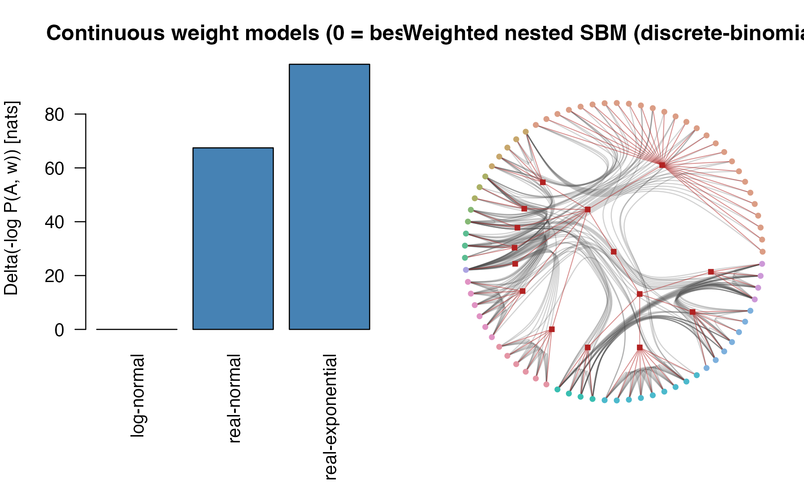
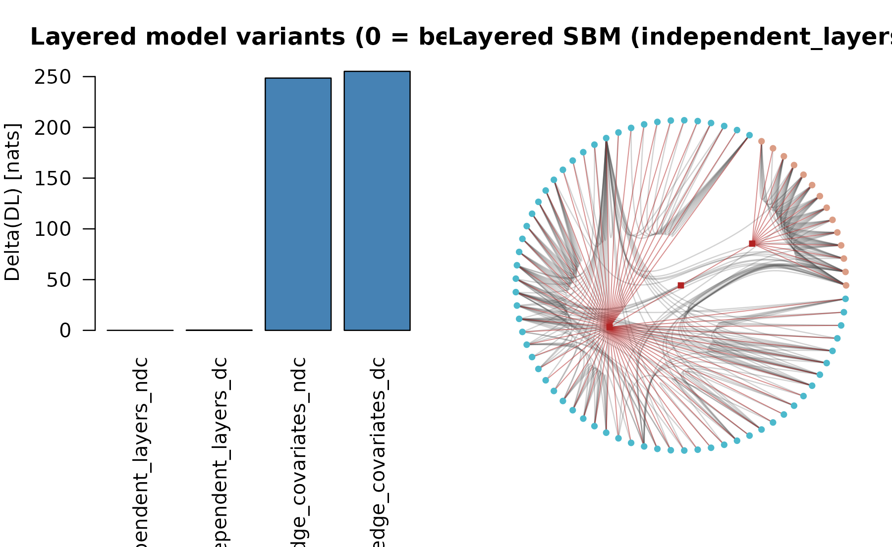

Weighted & Layered Stochastic Block Models
Source:vignettes/weighted-and-layered-sbms.Rmd
weighted-and-layered-sbms.RmdThis article combines the weighted_sbm and
layered_sbm demos, showing how to incorporate edge weights
(discrete or continuous covariates) and discrete multiplex layers into
flat and nested SBMs.
1. Weighted / edge-covariate SBMs
rgraphtool implements all five Peixoto (2018) discrete
and continuous covariate distributions (discrete-geometric,
discrete-poisson, discrete-binomial,
real-exponential, real-normal), including
simultaneous multi-covariate models and exact change-of-variables
log-Jacobians via transform_weights() for comparing raw
vs. log-transformed continuous models.
lesmis <- load_or_fallback_lesmis_weighted()
g <- lesmis$graph
w <- graph_edge_property(g, "value")
summary(w)
#> Min. 1st Qu. Median Mean 3rd Qu. Max.
#> 1.000 1.000 2.000 3.228 4.000 31.000
# Discrete count covariate models (MAP description length)
set.seed(42)
cmp_disc <- compare_weight_models(
g,
weights = "value",
nested = TRUE,
method = "map",
nruns = 3L
)
print(cmp_disc)
#> <weighted SBM model comparison (nested, DC, MAP)>
#> model B description_length jacobian_adj delta posterior_weight
#> discrete-binomial 12 1238.345 0 0.000 1.00e+00
#> discrete-poisson 10 1250.209 0 11.863 7.04e-06
#> discrete-geometric 5 1301.308 0 62.963 4.53e-28
#> Best weight model: discrete-binomial
# Continuous and log-transformed weight models with exact Jacobian adjustment
set.seed(42)
cmp_cont <- compare_weight_models(
g,
weights = "value",
candidates = c("real-exponential", "real-normal", "log-normal"),
nested = TRUE,
method = "posterior",
nsamples = 80L,
thin = 5L,
burnin = 40L
)
print(cmp_cont)
#> <weighted SBM model comparison (nested, DC, posterior/variational)>
#> model B description_length jacobian_adj posterior_entropy
#> log-normal 6 1176.268 205.164 32.017
#> real-normal 6 1233.020 0.000 14.427
#> real-exponential 5 1256.698 0.000 19.859
#> neg_log_evidence delta posterior_weight
#> 1150.539 0.000 1.00e+00
#> 1217.979 67.440 5.14e-30
#> 1249.032 98.493 1.68e-43
#> Best weight model: log-normal
best_w <- cmp_disc$best_state
set.seed(42)
unw <- minimize_nested_blockmodel_dl(g)
ov_w <- partition_overlap(nested_levels(best_w)[[1L]], nested_levels(unw)[[1L]],
norm = TRUE)
cat(sprintf("Level-0 partition overlap (weighted %s vs unweighted): %.3f\n",
cmp_disc$best_model, ov_w))
#> Level-0 partition overlap (weighted discrete-binomial vs unweighted): 0.675
old_par <- graphics::par(mfrow = c(1L, 2L), mar = c(7, 4, 3, 1))
tab <- cmp_cont$summary
graphics::barplot(
tab$delta,
names.arg = tab$model,
las = 2,
ylab = "Delta(-log P(A, w)) [nats]",
col = ifelse(tab$model == cmp_cont$best_model, "darkorange", "steelblue"),
main = "Continuous weight models (0 = best)"
)
graphics::par(mar = c(2, 2, 3, 1))
plot_hierarchy(best_w,
main = sprintf("Weighted nested SBM (%s)", cmp_disc$best_model))
graphics::par(old_par)2. Layered (multiplex) SBMs
When discrete edge types stratify a network into layers,
compare_layered_models() compares the
edge-covariate hypothesis
(independent = FALSE, where layers are edge labels on a
shared topology) against the conditionally independent
layers hypothesis (independent = TRUE, where each
layer is generated independently given the shared vertex partition).
cat(sprintf("N = %d vertices, E = %d edges, C = %d discrete layers\n",
graph_num_vertices(g), graph_num_edges(g), length(unique(w))))
#> N = 77 vertices, E = 254 edges, C = 17 discrete layers
set.seed(42)
cmp_l_map <- compare_layered_models(
g,
layers = "value",
models = c("edge_covariates_dc", "edge_covariates_ndc",
"independent_layers_dc", "independent_layers_ndc"),
nested = TRUE,
method = "map",
nruns = 3L
)
print(cmp_l_map)
#> <layered SBM model comparison (nested, 17 layers, MAP)>
#> model B description_length delta posterior_weight
#> independent_layers_dc 2 963.264 0.000 9.96e-01
#> independent_layers_ndc 4 968.828 5.564 3.82e-03
#> edge_covariates_ndc 7 1214.874 251.609 5.32e-110
#> edge_covariates_dc 4 1219.804 256.539 3.84e-112
#> Best layered model: independent_layers_dc
set.seed(42)
cmp_l_post <- compare_layered_models(
g,
layers = "value",
models = c("edge_covariates", "independent_layers"),
nested = TRUE,
method = "posterior",
nsamples = 80L,
thin = 5L,
burnin = 40L
)
print(cmp_l_post)
#> <layered SBM model comparison (nested, 17 layers, posterior/variational)>
#> model B description_length posterior_entropy neg_log_evidence
#> independent_layers 2 963.264 6.882 956.298
#> edge_covariates 4 1222.992 11.825 1206.045
#> delta posterior_weight
#> 0.000 1.00e+00
#> 249.747 3.44e-109
#> Best layered model: independent_layers
best_l <- cmp_l_post$best_state
old_par <- graphics::par(mfrow = c(1L, 2L), mar = c(9, 4, 3, 1))
tab_l <- cmp_l_map$summary
graphics::barplot(
tab_l$delta,
names.arg = tab_l$model,
las = 2,
ylab = "Delta(DL) [nats]",
col = ifelse(tab_l$model == cmp_l_map$best_model, "darkorange", "steelblue"),
main = "Layered model variants (0 = best)"
)
graphics::par(mar = c(2, 2, 3, 1))
plot_hierarchy(best_l,
main = sprintf("Layered SBM (%s)", cmp_l_post$best_model))
graphics::par(old_par)